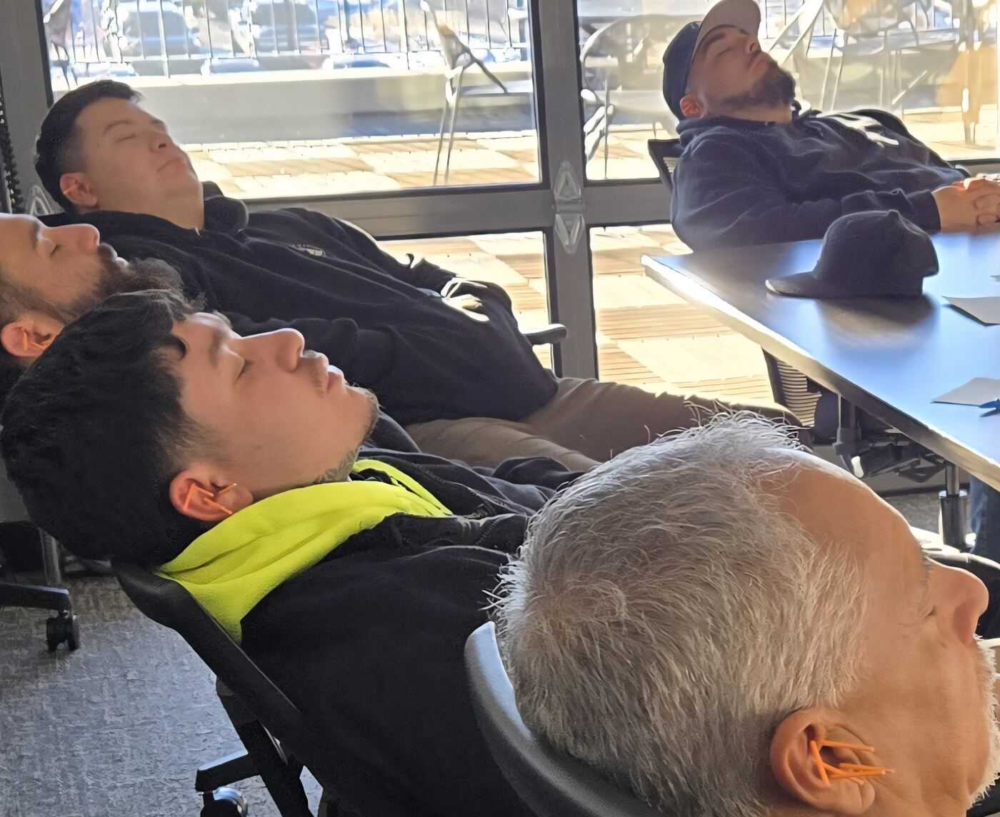

Preferred Municipal Vendor
Trusted by the City & County of Denver's Safety Division to manage tactical stress recovery for over 4,000 first responders.
Front Range · On-site · Teams of 10
Combat corporate burnout on-site with vagus nerve stimulation.
We convert a quiet office conference room into a 25–35 minute stress recovery wave that fits seamlessly into your organizational schedule. Ten employees at a time. Fully clothed. Zero intake forms. Immediate return to work.
Trust
Trusted by the City & County of Denver's Safety Division to manage tactical stress recovery for over 4,000 first responders.
Currently backed by the Denver Sheriff Department for building staff resilience and lowering barriers to care.
Certified Specialist with 6 years of high-stress deployment experience; fully backed by comprehensive general liability and professional malpractice insurance.
Protocol & Neuroscience
Traditional wellness benefits fail because professionals avoid the complex paperwork, data tracking, and social stigma of EAPs. Mobile Stress Recovery bypasses the mental friction entirely. We deliver a clinical, non-verbal, on-site intervention engineered to mechanically reset the nervous system where sustained focus is mission-critical.
Engineered for operations managers and directors who demand utilization over trends and require clean outcomes.
Metrics
| Off-Site Barriers | On-Site Framework | Operational Yield |
|---|---|---|
| High Friction & Stigma: Counseling intakes and diagnostic paperwork keep high-performers from using standard corporate benefits. | Parasympathetic Shift: Employees sit fully clothed for a 25-35 minute non-verbal ear protocol that drops cortisol mechanically. | Fewer Errors, Lower Claims: Stress is structurally mitigated before it escalates into sick leave, turnover, or disability claims. |

A seamless framework built entirely around your organization’s schedule.
Corporate Offerings
Flat billing per block applies via Empty Chair Policy. Strict 10-person safety cap.
The Practice
Lea Ann Rowley Owner, Certified Acupuncturist & Stress Recovery Specialist
On-site services have allowed our staff to explore alternative wellness options... Easy access has encouraged participation and broadened mindsets in a high-stress profession.
— Melissa Garner, Wellness Program Manager, Denver Sheriff Department
Lea Ann Rowley brings 6 years of high-throughput mobile wellness experience to her practice. As a preferred vendor for the City & County of Denver’s Safety Division, she has successfully scaled wellness protocols for 4,000 first responders. Uniquely trained across cutting-edge Western technologies and traditional Eastern herbalism, nutrition, yoga, and holistic wellness strategies, her practice is the only organization in Colorado delivering corporate NADA protocol structures at scale. Built for budgets that prefer a predictable monthly line item. [1, 2]
Field notes
My body was literally vibrating with stress... My body got a reset and even though the stressors are not gone, I can handle them once again.
— Teri Mitchell, Administrative Assistant III, City of Broomfield Police Department
I've experienced life-changing improvements in sleep, anxiety & clarity.
— Sgt. Gary Larson, Traffic Unit, Broomfield Police
A quick & convenient way to shut down ruminating thoughts.
— On-Site Corporate Participant
I'm more relaxed & less agitated. My family notices a difference in my mood.
— On-Site Corporate Participant
Her skill, reliability, and compassionate approach make her an exceptional wellness partner.
— Commander Falon Darling, Commerce City Police Department
Intake
Protect your top performers and stop revenue leaks. Discover the immediate benefits of workplace stress recovery. Apply now for a select number of complimentary pilot sessions. If qualified, we will deploy a temporary reset session directly to your facility for up to 10 stakeholders and/or Human Resources leaders to experience the program first-hand.
Or email directly: lea@mobilestressrecovery.com